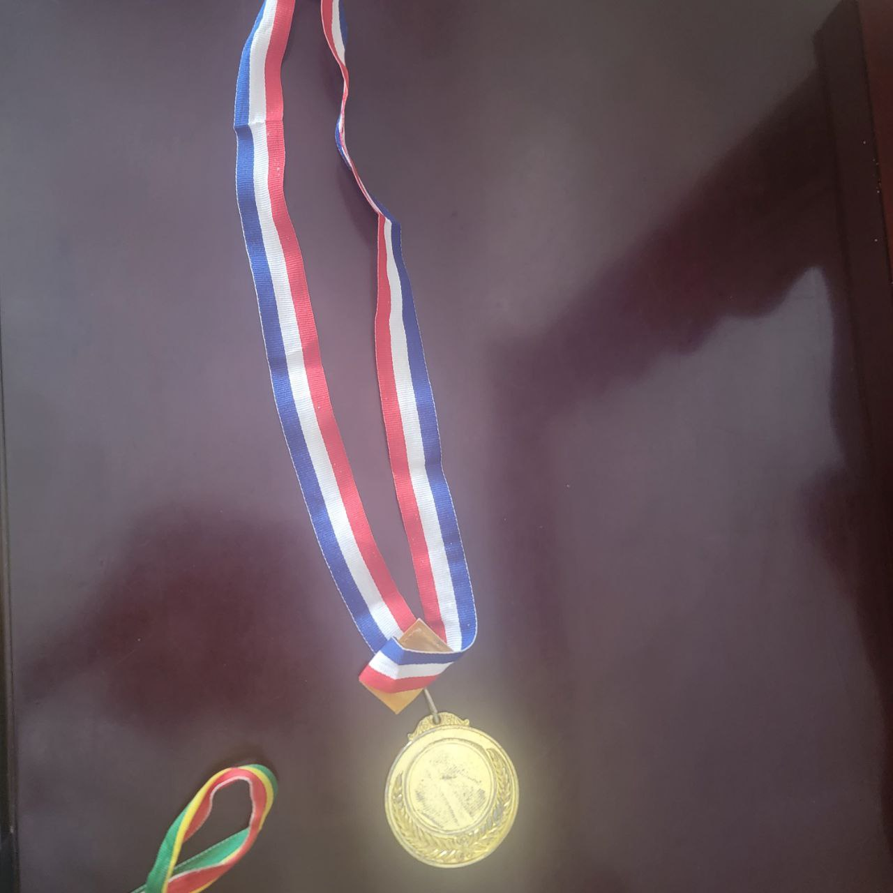
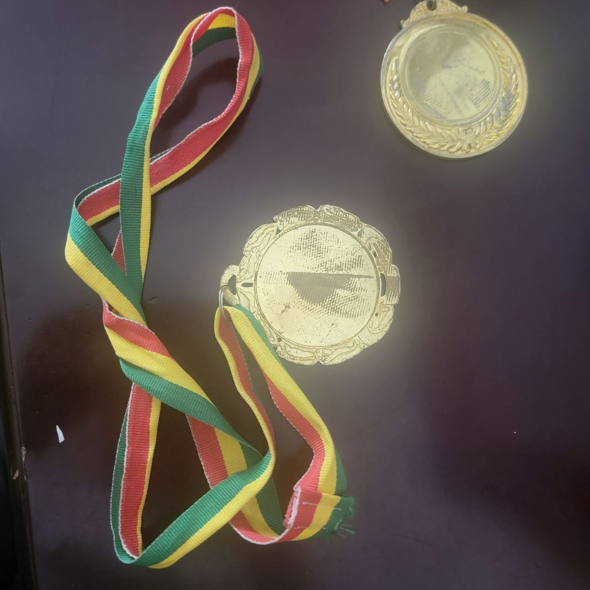
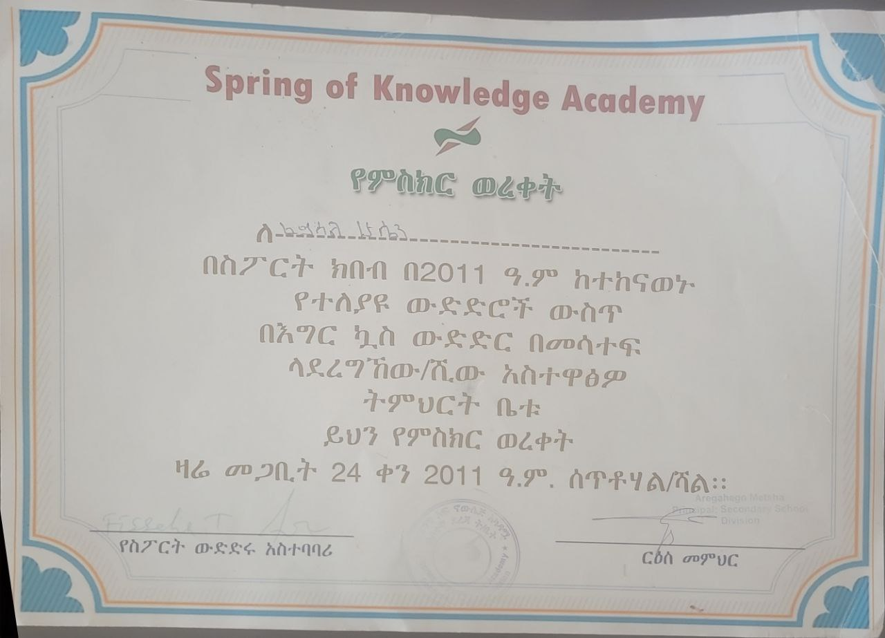

Spelling bee competition
In primary school I was really good at spellings. so I took part in spelling bee competition in my school. I stood second place in the competition,and I remember It was one of my happiest days in my primary school days.
Here's a medal I was awarded from the contest.

Question and Answer contest
I had the opportunity to participate in a question and answer contest, an exciting intellectual challenge that pitted me against some of the brightest minds from ten different schools. Each school was represented by two students, and I was honored to be selected to represent my own. The questions ranged across a wide spectrum of topics, from history and literature to science and mathematics, each one designed to test our knowledge and problem-solving abilities. I approached each question with a calm and focused demeanor, determined to give it my best shot.The final tally revealed that I had secured third place, a testament to my dedication to learning and my unwavering belief in my abilities.
A medal I was awarded from the contest.

Football competition
School football competitions are an integral part of the school experience, fostering camaraderie, sportsmanship, and a sense of belonging. Our school was no exception, and the annual football tournament was always a highly anticipated event. The air crackled with excitement as students from different corners cheered on their respective teams, each player striving for victory.As a year 10 student, I had the privilege of participating in the football tournament, my heart pounding with a mixture of anticipation and nervousness.The tournament commenced, and our team faced off against formidable opponents, each match a test of our resilience and determination. We fought tooth and nail.
After a series of nail-biting matches, we found ourselves in the finals, facing a team known for their prowess and unwavering spirit. The tension was palpable as the whistle blew, signaling the start of the match. We played with unwavering passion, giving it our all until the final whistle.Despite our valiant efforts, we fell short of victory, losing in the final match. The disappointment was palpable, but it was tempered by the pride of reaching the finals and the unforgettable memories we had created together. The experience had forged unbreakable bonds, taught us the value of teamwork and perseverance, and instilled in us a deep appreciation for the beautiful game of football.
A certificate from the contest.
